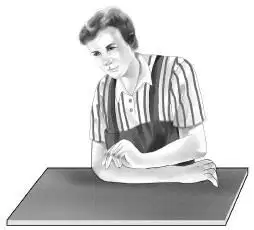

More Questions
班尼和维莉告诉了亨利、杰西和奥登先生关于阁楼上那间秘密小屋的全部情况。所有人都试着去猜测为什么屋子被封了起来，但大家都没有头绪。
班尼说道：“海先生认为，马克斯叔叔可能会有线索。他明天就要带海夫人和孩子去见马克斯叔叔啦，还想解释一下望远镜的事儿，并问我们想不想一起去。”
“我很想呀，”杰西说道，“不过你觉得我们会妨碍他们吗？毕竟，塞米和小杰的爸妈不经常带他们出去啊！”
亨利说道：“兄弟俩都觉得爸妈对工作比对他们兴趣大得多，这真糟糕。”
“既然海先生问了我们的意愿……”班尼说，“他的车可装不下这么多人。亨利，要不你把我们的旅行车开去？”
这便是最终的解决办法。

出发的时候，维莉和班尼会意地看了看彼此，因为他们听到海先生在说：“塞米，过来，和我坐在一起，我们可以聊聊天。小杰，你拿着望远镜和妈妈坐一块儿。”
亨利发动引擎时，海先生正说到：“我希望马克斯的餐厅能有所起色，如今很少有人走海滨路，顾客也越来越少了。”
小杰点点头，说道：“的确如此，不过他是世界上最棒的厨师了。”
塞米接着说道：“马克斯叔叔很喜欢看别人吃他做的美食，这会让他很高兴。”
“问题是，他不想让其他人帮助他。”海先生说。
塞米说道：“或许我们可以帮他想些点子。我想这能行得通。”
“也许你说得对。”海夫人说道。
当车停到餐厅门前时，马克斯叔叔简直不敢相信自己的眼睛。他三步并作两步地奔下楼梯，握住了弟弟的手。
他说：“约翰，见到你真是太高兴啦！欢迎大家，快进来吧。”
塞米叫道：“我就说我们会再来的吧？”
“是啊是啊，你们果然说话算数！快找凳子坐下吧。”
塞米迫不及待地展示道：“快看，马克斯叔叔——望远镜！”
“居然被找到你们啦？在哪儿找到的？”马克斯叔叔喜出望外，他看向小杰。
“在白橡树的树洞里。”小杰说。
“原来如此！”马克斯叔叔说着，沉思了一会儿，“我想，一定是隔壁那个帮我们建造树屋的先生把望远镜搁在树洞里，只是忘了告诉我们而已，我确信他是个好心人。”
海先生说道：“我也是这么想的。拿走望远镜的，不是我，也不是你，没有任何人拿走它。”说完，哥俩的手又一次紧紧地握在了一起。
“还有呢，我们又发现了更多的事——一个惊喜和一个秘密！”塞米坐在高脚凳上，转动着。其他人则围坐在大桌子旁。
“塞米没说错，”他父亲说，“他们发现了一个大秘密，让孩子们来告诉你吧，没准你还能帮忙解开这个秘密。”
就这样，两个男孩向他们的叔叔讲述了圆窗的故事，以及他们是如何用望远镜发现它的，当然还描述了那间密室和里面的所有玩具。

马克斯叔叔眉头微蹙。
“哦，天哪，真希望我能记起来，”他惊呼道，“我从来都不知道有那间屋子，不过我知道很久以前住在宅子里的人，可是我忘了他叫什么来着？”
“要不按字母表顺序试试。”小杰提醒道。
大家都笑了起来，不过马克斯叔叔真的照做了。
“名字不是以A开头，也不是B。哦，是C，一定是！库克？柯林斯？不，不，都不是。”
“库珀？”海夫人提示了一下。
“卡特？”杰西补充道。
“等等！”马克斯叔叔突然说道，“卡特听起来很接近了。让我再想想。有了！是卡韦！就是这个名字。我确定。”
大家都兴奋地拍起手来。
“我父亲告诉过我，海之屋是多年前由卡韦家建造的。当年我们搬进去时，房子至少有一百年的历史了。”
“真糟糕，我小时候居然对这些事一点儿都不感兴趣，”海先生说，“你还能想起别的来吗？好给孩子们提供一些信息。”
马克斯摇摇头，说道：“我尽量吧！不过要是我在密室的话，会发现更多线索，比如信件、照片什么的。”
他的弟弟笑了笑：“我相信这些孩子很快会把密室翻个底朝天的。好啦，马克斯，现在谈谈你自己吧。”
马克斯叔叔面露难色。
“餐厅生意不是很好，”他说，“不过，你们别担心，该烦心的是我。”
“可我会担心啊，”塞米插了进来，“马克斯叔叔，我想替你分忧！”
“谢谢你，小家伙，”他说，“我想我应该关闭这家餐厅，找其他的事儿干才对。可我很喜欢做美食，也喜欢看客人们享用我做的美食。”
海夫人说道：“那你就不该关掉餐厅啊！人本来就应该做自己喜欢的事情，而不是只为了赚钱而工作。”

班尼环顾了一下四周，建议道：“大家都喜欢在明亮的地方吃饭，而这里的光线太暗了。”
小杰补充道：“或许起个新名字会时来运转呢！我们在纽约时，经常去一家名叫‘杰克蹦蹦跳’的餐厅，就是因为喜欢那家店名，其实那里的食物并没有你做的好吃。”
杰西建议道：“我觉得，人们之所以会忽略你的餐厅，是因为他们不常走这条路。要是你想些特别的点子，他们就会乐意过来啦。”

“那么——我会想个新店名出来，”马克斯叔叔说，“然后自力更生，多装几扇窗户。”
海先生一家和奥登家的孩子们兴致勃勃地谈论着餐厅的事儿，直到午餐时分。随后，约翰·海亲自见证了哥哥精湛的厨艺，他和妻子要了一份鸡肉沙拉，孩子们则点了热狗，全都好吃极了。
亨利和海先生准备付钱给马克斯时，他推辞道：“拜托啦，别这样！午餐算我请你们的。”
亨利劝说道：“这可不行。八个人在这白吃白喝，你也太亏了。”
“如果我们不付钱，爷爷会不高兴的。”班尼附和道。
无奈之下马克斯叔叔只能收下钱。
当他们回到家时，小杰说道：“我们直接去那间密室吧，重新搜查一遍，说不定能发现我们错过的东西。”
“我还没去过密室呢。”亨利回应道。
“我也没有！”杰西补充道。